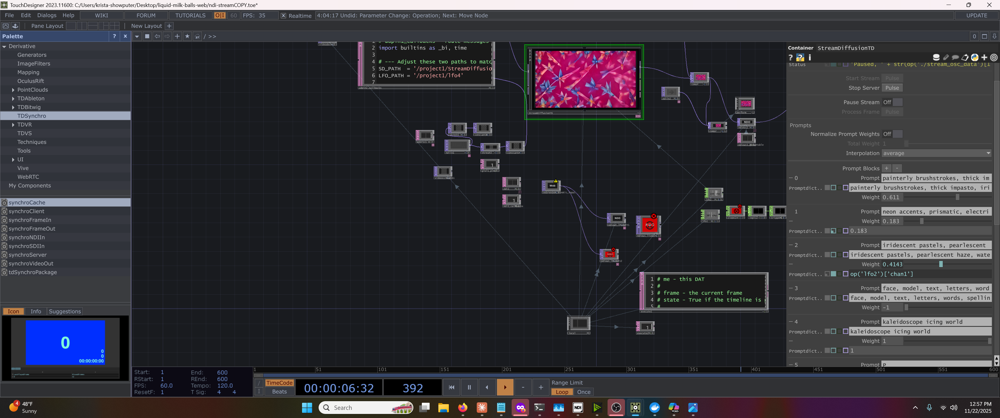
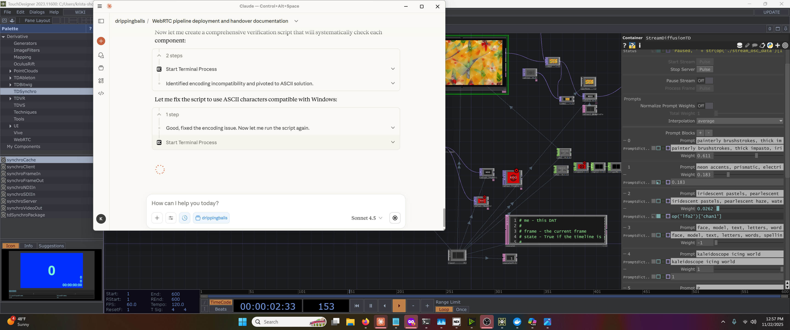

🔍 TouchDesigner WebRTC Pipeline Verification
Generated:
⏸️ MANUAL REVIEW REQUIRED - Check screenshots below
📸 Screenshot 1: TouchDesigner Window
What to look for:
- ✅ Check if
webrender_livekit_input operator is visible
- ✅ Look for VIDEO displaying in the operator
- ✅ Verify the operator shows active content (not black/empty)
- ✅ Check if there are any error indicators

Click image to open in new tab for detailed view
📸 Screenshot 2: Browser Developer Console
What to look for:
- ✅ Check for message:
[TD-VIEWER] Connected: claymation-live
- ✅ Look for video track subscription messages
- ✅ Verify no error messages in console
- ✅ Check connection status indicators

Click image to open in new tab for detailed view
📊 Verification Checklist
Complete verification steps:
- ❓ TouchDesigner: Video visible in webrender_livekit_input operator
- ❓ Browser Console: Connected to LiveKit room "claymation-live"
- ❓ Video Subscription: Video track subscribed and receiving
- ✅ OBS: Video confirmed in previous session screenshot
- ✅ Backend: All services running (Node, LiveKit)
- ✅ Fix: SDK v2.0.7 deployed successfully
🎯 Next Steps
If screenshots show success:
- ✅ Document as 100% VERIFIED SUCCESS
- ✅ Create VERIFICATION_COMPLETE.md
- ✅ Celebrate! Pipeline is fully working!
If issues found:
- 📝 Document specific issues seen
- 🔧 Refer to AGENT_HANDOVER_COMPLETE.md for troubleshooting
- 🔄 Try reloading TouchDesigner webrender operator
💡 High Confidence: Video was confirmed in OBS in previous session